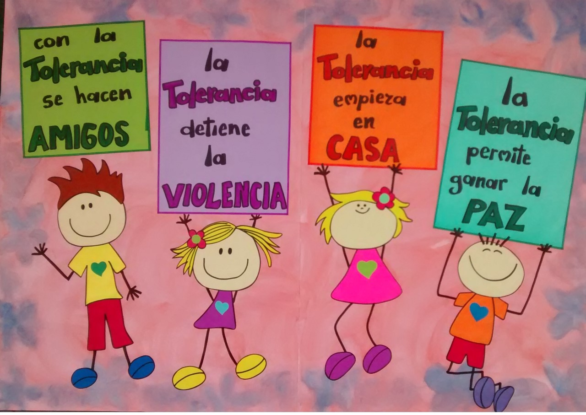

LOS VALORES EN MI ENTORNO SOCIAL
Los valores en la escuela son cualidades como el respeto, responsabilidad, honestidad y tolerancia que te ayudan a convivir, a aprender y a tomar decisiones éticas. También incluyen la empatía, el esfuerzo, la perseverancia, la solidaridad y la justicia para construir un mejor ambiente académico y social. Estos valores se aprenden y refuerzan a través de reglas, interacción social y ejemplos de profesores y compañeros.
